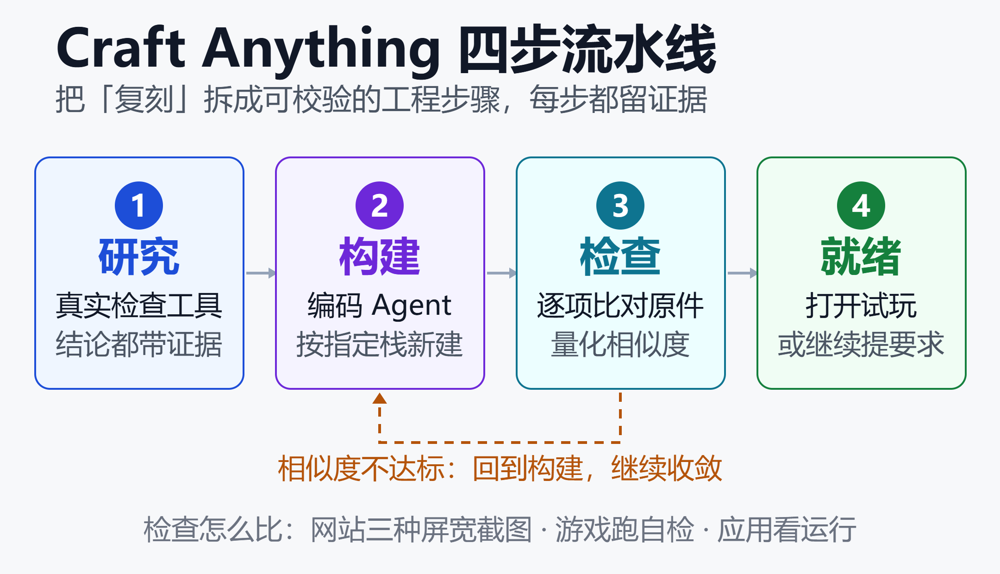
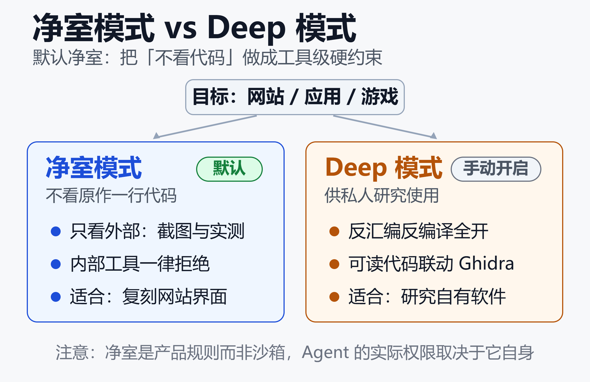

Claude 不让逆向，他们干脆开源了一个逆向引擎：Craft Anything 的复刻流水线
一个开源仓库，26 天拿下 43,846 个 Star、8,672 个 Fork。
storytold/craft-anything 在 2026 年 10 月 31 日公开。时间点很微妙：这之前不久，Anthropic 刚刚收紧了 Claude 对逆向工程和游戏克隆的限制，知名逆向工具 REA（Reverse Engineer Anything）首当其冲，不少用户发现自己的逆向分析请求被 Claude Code 直接拒绝。
ArtCraft 团队的回应不是绕过限制，而是换了一条路：把逆向分析从 AI 手里收回来，交给一个纯 Rust 写的确定性引擎，AI 只做它最擅长的事——照着证据写新代码。
这个思路的产物就是 Craft Anything：看清任意网站、应用或游戏是怎么做的，再让 AI 给你造一个自己的版本。
从 REA 被封锁说起
2026 年下半年，Anthropic 开始封锁 Claude 的游戏克隆和逆向工程行为。Tom's Hardware 的报道显示，受影响的远不止恶意场景，连普通的逆向分析、故障排查类请求也一并被拒。
REA 是这波限制中最受关注的工具。它让 AI Agent 对软件做逆向分析并给出完整证据链，此前本站已在REA爆火：AI Agent逆向一切，从网页行为到原生二进制的证据链革命中做过详细解析。
耐人寻味的是 ArtCraft 创始人 Brandon Thomas 的表态：他的团队不会使用 REA，理由是避免反编译商业软件带来的法律风险。这位亚特兰大工程师曾任 Storyteller.ai CEO、在 Square 做过工程师，2026 年 10 月刚刚用 Claude 协助、以纯 Rust 复刻了 Adobe 七款应用（PhotoCraft 对标 Photoshop、FilmCraft 对标 Premiere 等）和微软 Office 三件套，还在 Hacker News 上直接宣布「Software is over」。
Craft Anything 正是这套打法的产品化。仓库公开 26 天后 Star 数突破 4.3 万；科技博客 ibl.ai 的记录显示，它开源仅 10 天就迈过了 2.5 万 Star。
Craft Anything 是什么：四步流水线
一句话概括：把目标指给它，说清你要什么，按下 Start。官方把流程拆成四步：

- 研究（Study）：检查原件。网站看各种宽度下的页面，程序看代码、文件和运行方式，每个结论都带证据。
- 构建（Build）：编码 Agent 按你指定的语言、框架或引擎，建一个全新的项目。
- 检查（Check）：把构建成果与原件逐项比对，列出还不一致的地方。网站按桌面、平板、手机三种屏宽截图对比；游戏则跑它自己的自检。
- 就绪（Ready）：打开、试玩或预览结果；不满意就继续提要求，让它接着收敛。
关键区别在于「比对过，不是猜的」。每次重建都有量化的相似度，而不是 Agent 自说自话。项目文件夹里的 checks/ 目录保存了每一轮比对记录，investigation.cany/ 存的是证据。
使用方式分两档：Simple 模式只问「你想做什么」，适合直接复刻；Advanced 模式是完整工作台，函数列表、伪 C、反汇编、十六进制、调用图、证据账本一应俱全。两种模式驱动同一个引擎。
命令行同样可以一键发起重建，问题会在终端里问你：
craft-anything-cli rebuild https://example.com "复刻这个网站"
净室模式：把「不看代码」做成硬约束
Craft Anything 最有设计感的部分，是默认开启的净室模式（Clean room）。
净室模式下，原作的任何内部信息都不读：不读代码、不读文件、不读页面源码。引擎只从外部观察——你提供的截图、访客视角看到的网页（可见文字、实测的布局/颜色/字体/间距、被打开的菜单），以及你允许时的一张应用窗口截图。
更关键的是，这不是一句提示词约束，而是工程约束：会「看内部」的工具在净室模式下直接拒绝执行，并提示你如何开启 Deep 模式。

Deep 模式则放开所有工具：内置的反汇编器、反编译器全盘上阵，装了 Ghidra 还会联动，定位是私人研究自己拥有或有权检查的软件。
官方对净室的边界说得很诚实：它是一条产品规则，不是操作系统沙箱，不隔离你的电脑。编码 Agent 仍以你的身份行动，能读写什么取决于它自己的权限。
309 个检查工具：引擎自己先看懂
Craft Anything 的引擎内置 309 个检查工具、分 17 个工具集，加上 AI 和安装层的工具共约 320 个。每个工具同时有三种身份：CLI 子命令、MCP 工具、Agent 可调用的函数。换句话说，任何 Agent 都能驱动跟桌面应用同一个引擎，纯研究甚至不需要 AI。
覆盖面的几个样本：
- 原生程序（55 个）：反汇编、反编译伪 C、交叉引用、调用图、值流分析。
- 网站（24 个）：页面捕获、三屏宽截图对比、JS 分析、模块图追踪、脚本化走查。
- 移动与桌面生态：Android 14 个、Apple 14 个、.NET 8 个、Java 6 个、Electron/JS 11 个。
- 更偏门的：固件提取、抓包分析、数据库、Unity/Unreal 游戏资源解包、Frida 动态插桩、GDB 与 Rizin 调试会话。
这些解码器、反汇编器和反编译器全部是纯 Rust 自研，不依赖外部程序。引擎同时驱动桌面应用（egui）、CLI 和 MCP Server，其中一部分还能编译成 WebAssembly 在浏览器里跑——网页版只做格式识别与检查，文件不离开浏览器。
这个「把软件能力封装成 Agent 工具」的思路，与 CLI-Anything 是同一个趋势的产物，背景可参考当软件的下一代用户是 AI：CLI-Anything 与 Agent 工具市场的未来。
Agent 生态：Claude Code 打头，ACP 通吃
构建环节需要一个装在你电脑上的编码 Agent，Craft Anything 自己不发明模型。
- Claude Code 是一等公民：运行你本机未修改的 claude 程序，用你自己的登录，Craft Anything 不接触账号。
- ACP 协议阵营：GitHub Copilot、Grok Build、Kimi Code CLI、Gemini CLI、Qwen Code、opencode、goose、Hermes、Maki、Devin，其中 Maki 和 Devin 已真机跑通。
- 问答与分析层：Anthropic、OpenAI、OpenRouter、xAI 以及本地 OpenAI 兼容服务，都可以在设置里接入。
对国内用户的实际意义在于：Kimi Code 和 Qwen Code 都在支持列表里，构建 Agent 并不绑定 Claude。如果选择 opencode，用法可以参考OpenCode实战指南：免费AI编程Agent + 免费大模型，零成本搞定代码开发。
平台支持也足够广：Windows、macOS、Linux、FreeBSD 都有签名安装包，从源码构建需要 Rust 1.97 以上。
冷静看：early alpha 的边界在哪
官方自己把状态标为 early alpha，而且把「没做完」写得很具体：API key 方式的构建从未真机跑过，Claude Code 之外的 Agent 只接好了一部分；应用和游戏的行为校验只做了一半；少数引擎工具只对替身程序测试过。路线图上还躺着未来的商业化方向——托管版（managed tier）。
社区实测给了更直观的参照。有用户让它重建一个 3D 滚球小游戏，最终得到的是「一张截图式的近似」：页面布局在三种屏宽下都对齐了，但画面相似度检查只拿到 73%，没到 90% 的目标线，维护者在 issue #1590 里坦言放弃继续收敛。另一位用户用它做长链路逆向调查时撞上多层上下文压缩——标称 12 万 token 的窗口，有效预算早早落到 7.7 万左右，长调查被迫中断（issue #2150）。
换句话说：网站复刻是目前最成熟的路径，游戏和应用的「神还原」还不是常态。期望管理很重要。
法律与安全的边界
复刻软件天然踩在版权的灰色地带。Plagiarism Today 讨论 ArtCraft 的 Adobe 复刻时指出：即使不复制代码，界面布局与视觉风格是否构成商业外观侵权，仍是没有标准答案的问题。
Craft Anything 的做法是把防线写进产品：明确声明不绕 DRM、不绕登录、不绕反作弊；重建的是布局、风格和行为，Agent 被告知不复制 logo、照片和文案，除非你确认拥有或已获授权。
安全上，规则之外的命令要先弹审批卡。官方还特别提醒：npm 安装依赖时，包的安装脚本会在你电脑上真实执行，对不信任的项目可以用 npm install --ignore-scripts。这类供应链风险的系统分析，可参考Vibe Coding的隐藏代价：2000个裸奔应用、630万丢失订单、和322%的权限漏洞。
这些约束挡不住有人拿它作恶，但至少把建议的使用方式定义得很清楚：用在你拥有或有权检查的软件上。
小结
Craft Anything 的爆火，本质是「AI 复刻软件」从手工作坊走向流水线的标志。
它把逆向分析从 LLM 手里收回，交给确定性的 Rust 引擎——既绕开了模型厂商对逆向行为的封锁，也用净室设计回应了版权争议；四步流水线加量化的相似度校验，则把「感觉像」变成了「测过像」。
对开发者来说，眼下最实际的用法有三个：研究一个网站的实现后重建自己的版本、给老项目做竞品级分析，或者单纯把它的 309 个检查工具当免费逆向工作台。至于「一键克隆任何软件」，那是 alpha 之后的事。
免责声明
本文基于公开资料整理，项目处于 early alpha 阶段，功能与数据可能快速变化，以官方仓库为准。复刻他人软件存在版权与合规风险，请仅用于你拥有或有权检查的软件。本文不构成法律意见或投资建议。
参考来源
- GitHub —— storytold/craft-anything 项目主页
- GitHub —— Craft Anything 工具清单 docs/tools.md
- GitHub —— Craft Anything 路线图 docs/ROADMAP.md
- GitHub —— Craft Anything 现状说明 docs/STATUS.md
- GitHub Issue #1590 —— 重建产出是截图式近似而非忠实复刻
- GitHub Issue #2150 —— 长链路逆向时上下文被多层压缩
- Tom's Hardware —— Anthropic 封锁游戏克隆与逆向请求
- PetaPixel —— 有人用 AI 重建了开源版 Photoshop、Premiere 和 Lightroom
- Futurism —— Adobe 复刻的作者再度出手，逆向微软 Office
- Plagiarism Today —— Vibe Coding 版 Adobe 复刻的版权问题
- ibl.ai —— 当 Agent 能重建应用，软件护城河还剩什么
- KuCoin News —— ArtCraft 创始人表态不使用 REA
相关阅读
- REA爆火：AI Agent逆向一切，从网页行为到原生二进制的证据链革命
- 当软件的下一代用户是 AI：CLI-Anything 与 Agent 工具市场的未来
- OpenCode实战指南：免费AI编程Agent + 免费大模型，零成本搞定代码开发
- Vibe Coding的隐藏代价：2000个裸奔应用、630万丢失订单、和322%的权限漏洞
推荐搭配装备
善其事，利其器。以下硬件能最大化你的AI体验👇
🔗 通过以上链接购买可支持本站持续运营 🙏